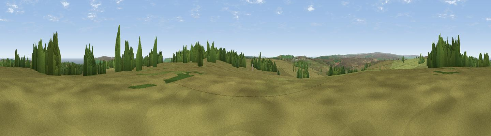

Stony Leas
#14983 in England · top 35% of its area beats it · near GoathlandWhere it is
The exact computed spot (SE 88675 99225). Click the marker for map links.
The view, rendered

A 360° render of this exact spot computed from the terrain model, tree cover and land cover — summer colours, afternoon light, calibrated against photographs of famous viewpoints. Real trees, hedges and buildings will differ in detail.
The panorama
Grey silhouette: terrain skyline in each direction (720 bearings, Earth curvature and refraction included). Dashed green: skyline with trees (+15 m) and buildings (+8 m) as obstacles. Blue strip: how far the ground is visible on each bearing.
Where the view opens
Wedge length = distance to the farthest visible ground on that bearing (vegetation-aware). Rings at 10, 25 and 50 km.
What fills the view
75% grassland · 16% woodland · 6% water · 1% cropland
Angular shares of the visible panorama (visual magnitude), not map area. Landscape diversity 0.34 (0–1 Shannon).
Key numbers
More beautiful places nearby
The staircase of upgrades: each row has a higher view potential than everything closer. Driving times are estimates from straight-line distance, calibrated against real road routing — check an actual route before setting out.
| Place | Direction | Drive | Score |
|---|---|---|---|
| Whinny Nab | SSW · 5 km | ~11 min | 64.9 |
| Pen Howe | NNW · 6 km | ~12 min | 67.7 |
| Viewpoint near Ugglebarnby | N · 6 km | ~12 min | 69.2 |
| Viewpoint near Fylingthorpe | NE · 6 km | ~13 min | 71.2 |
| Flat Howe | NNW · 6 km | ~14 min | 76.4 |
| Viewpoint near Eskdaleside | NNW · 7 km | ~14 min | 78.4 |
| Viewpoint near Fylingthorpe | NE · 7 km | ~14 min | 81.1 |
| Viewpoint near Ravenscar | ENE · 8 km | ~15 min | 81.5 |
54.38081, -0.63622 · source: osm peak · position refined by local search. Computed location — check access rights before visiting.